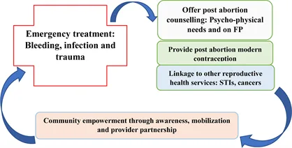
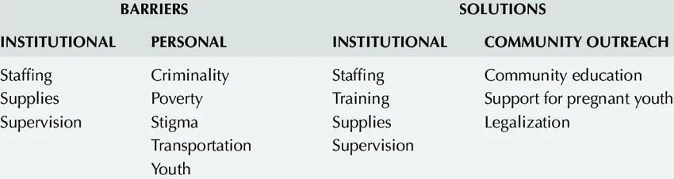
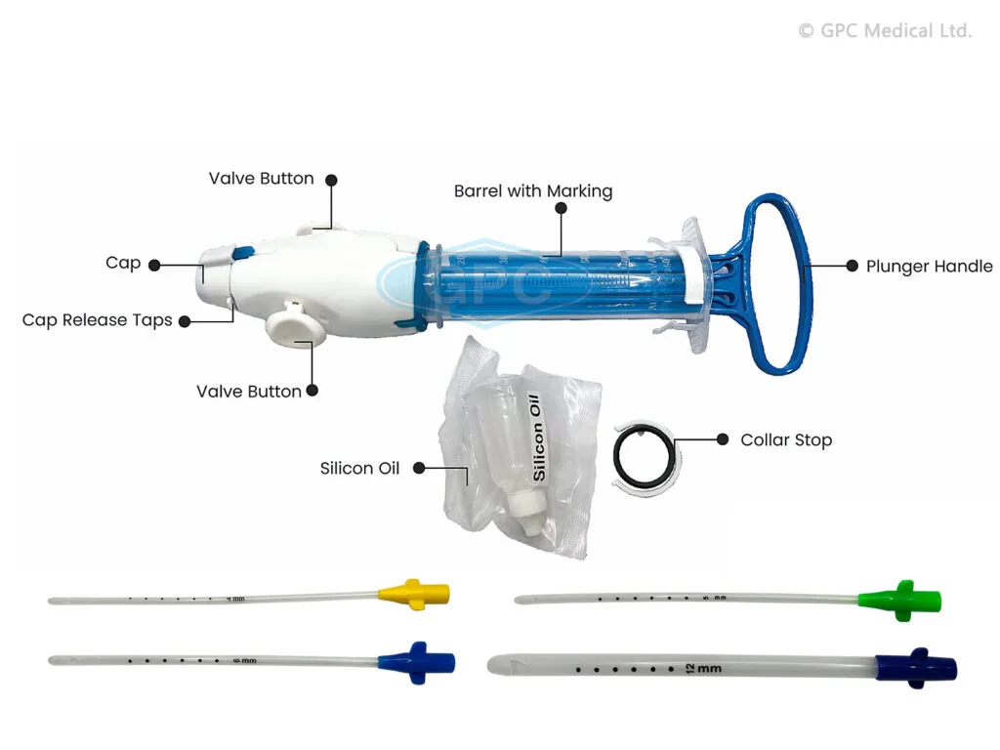

Expanded Nursing Uganda Explanation
Threatened and Inevitable Abortion should be reviewed through safe maternal and newborn assessment, early recognition of danger signs, respectful communication and timely referral. Connect the definition to vital signs, bleeding, fetal or newborn wellbeing, patient education and local protocol requirements.
01 THREATENED ABORTION
Threatened abortion occurs when products of conception tend to be expelled before 28 weeks of gestation, but the disturbance is minor enough that the fetus can continue to term.
02 Clinical Features of Threatened Abortion
Symptoms: ****
- History of amenorrhea.
- Painless vaginal bleeding.
- Slight or no abdominal pain.
- Patient may complain of backache and abdominal discomfort.
Examination (Signs):
- General condition is good; on Vaginal examination, the OS is closed.
- No uterine contractions.
- Membranes remain intact.
- Slight bleeding per vagina.
- Signs of pregnancy.
- The size of the uterus corresponds with the weeks of amenorrhea.
- On abdominal palpation, the height of the fundus usually corresponds to the period of amenorrhea.
NB: No vaginal examinations must be done unless the bleeding is severe with clots.
03 Management of Threatened Abortion
Maternity:
- Admit the patient and ensure complete bed rest.
- Take personal and obstetrical histories, including the last normal menstrual period.
- Monitor vital signs: temperature, pulse, respiration, and blood pressure.
- Conduct a general examination to rule out anaemia, dehydration, and jaundice.
- Investigations include, Blood smear for malaria parasites, Urine for urinalysis
- Aseptic vulval scrubbing, provide a clean pad, and save used pads.
- Administer Phenobarbital tablets 30mg – 60 mg 8 hourly.
- Observe for 4-6 hours.
- Paracetamol 1 g every 6-8 hours prn for 5 days.
- Provide lubricants such as liquid paraffin (30 ml) to lubricate the faeces.
- No enema is provided.
- Change vulval scrubbing pads and examine used ones for blood loss.
- Record the amount of blood loss, including clots and membranes.
- Ensure daily bath and oral hygiene.
- Pay special attention to the bladder; ensure regular urination and bowel movements.
- If bleeding stops, avoid strenuous activity and abstain from sex for at least 14 days.
- Follow up in 2 days in the ANC clinic.
- If bleeding persists, refer to the hospital.
Hospital:
- Admit the mother in the gynaecological ward for complete bed rest.
- Take personal and obstetrical histories, including the last normal menstrual period.
- Monitor vital signs: temperature, pulse, respiration, and blood pressure.
- Conduct a general examination to rule out anaemia, dehydration, and jaundice.
- Order investigations: blood for HB, grouping and cross-match, blood smear for malaria parasites, urine for urinalysis.
- Reassure and calm the mother.
- Conduct vaginal inspection, clean the vulva with normal saline, and apply a clean pad.
- Encourage frequent urination to avoid urine retention.
- Provide roughages to prevent constipation.
- Ensure a highly nutritious diet.
- Administer prescribed mild sedatives if the patient is restless and anxious.
- Treat the identified cause of abortion (e.g., malaria).
- Administer Phenobarbital tablets 30mg – 60 mg 8 hourly as prescribed.
- Observe for 4-6 hours.
- Paracetamol 1 g every 6-8 hours prn for 5 days as prescribed.
- Provide lubricants such as liquid paraffin (30 ml) to lubricate the faeces.
- No enema is provided.
- Change vulval scrubbing pads and examine used ones for blood loss.
- Record the amount of blood loss, including clots and membranes.
- Ensure daily bath and oral hygiene.
- Pay special attention to the bladder; ensure regular urination and bowel movements.
- Maintain hygiene by changing soiled linen, carrying out bed baths, and ensuring oral hygiene.
- Provide clean clothing to the patient.
Advice on discharge:
- Continue bed rest at home.
- Avoid sexual intercourse for 3-6 weeks.
- Avoid heavy work such as lifting heavy things.
- Report immediately if bleeding reoccurs.
- Attend antenatal clinics.
- Take only prescribed drugs.
Note: If threatened abortion is not attended to properly, it may lead to inevitable abortion.
04 Causes of Inevitable Abortion
- Maternal Infections : Infections such as syphilis, especially during the mid-trimester, can significantly increase the risk of inevitable abortion. Syphilis can lead to complications that affect the developing fetus and the health of the pregnancy, potentially resulting in unavoidable pregnancy loss.
- Congenital Abnormalities : Fetal congenital abnormalities, which may arise due to genetic factors or environmental influences, can contribute to inevitable abortion. These abnormalities can impact the fetus’s viability and development, leading to pregnancy complications that cannot be averted.
- History of Induced Abortion : A previous history of induced abortion can be a risk factor for inevitable abortion in subsequent pregnancies. The uterine scarring or damage resulting from a previous abortion procedure may increase the likelihood of pregnancy loss in future gestations.
- Incompetent Cervix : Also known as cervical insufficiency, this condition involves the cervix opening too early during pregnancy, potentially leading to inevitable abortion. The weakened cervix is unable to support the growing fetus, resulting in premature dilation and pregnancy loss.
- Uterine Anomalies : Structural abnormalities of the uterus, such as a septate or bicornuate uterus, can predispose women to inevitable abortion. These anomalies can interfere with the implantation and development of the fetus, increasing the risk of pregnancy loss.
- Hormonal Imbalances : Fluctuations in hormone levels, particularly progesterone, can impact the maintenance of a healthy pregnancy. Hormonal imbalances may lead to inadequate support for the developing fetus, contributing to inevitable abortion.
05 Clinical Features of Inevitable Abortion
- History of amenorrhea.
- Lower abdominal pain and backache.
- Heavy vaginal bleeding with clots.
- Dilated cervix.
- Painful uterine contractions.
- Rupture of membranes, with liquor visible, especially after 16 weeks.
- On speculum examination, membranes and other products of conception may protrude through the cervix or vagina.
- Signs and symptoms of shock in the mother.
- Palpable uterus may be smaller than expected.
NB: Inevitable abortion may be either complete or incomplete.
06 Management of Inevitable Abortion
In the Maternity Center:
- Considered a gynaecological emergency requiring swift actions.
- Admit the patient and provide reassurance.
- Take a history, including presenting complaints.
- Perform a physical examination, including vital signs and general examination.
- Rule out signs of shock.
- Examine to determine the level of the fundus and estimate gestation.
- For pregnancies above 12 weeks, conduct a speculum examination to remove blood clots or visible products of conception.
- If bleeding is heavy, administer ergometrine 0.5mg IM or oxytocin IV to induce uterine contractions and expel products of conception.
- Administer pethidine injection 100 mg if Blood Pressure is 100/80 mm/Hg or more.
- Keep the mother on IV fluids to prevent shock.
- After complete expulsion of products of conception, check the uterus for adequate contraction.
- Measure and record all blood loss and observations accurately.
- Allow the mother to rest comfortably.
- Assess if abortion is complete or incomplete and manage accordingly.
In the Hospital:
- Admit the mother to a well-equipped gynaecological ward.
- Take a complete history, focusing on the onset and amount of bleeding and any history of infection or disease.
- Reassure the patient and relatives.
- Conduct a brief general examination to assess the mother’s condition and rule out anaemia, dehydration, and shock.
- Palpate the mother’s abdomen to estimate weeks of gestation.
- Take baseline vital observations.
- Clean the vulva, prepare for a vaginal examination, and apply a sterile pad.
- Attempt to remove parts of the placenta or fetus visible through the cervical os or vagina.
- Inform the doctor.
- Carry out investigations as requested by the doctor.
- Doctor’s treatment includes IV oxytocin for pregnancies 16 weeks and below; blood loss control with oxytocin/ergometrine injection; possible blood transfusion according to lab results; administration of intravenous fluids to prevent shock.
- Prescribe analgesics to reduce pain, haematinics such as ferrous, and ensure good hygiene.
- Provide a nutritious diet to the patient.
07 Prevention of Inevitable Abortion
- Regular Antenatal Care : Attending antenatal clinics is crucial for the early identification and management of potential risk factors for inevitable abortion. Regular prenatal check-ups allow healthcare providers to monitor the pregnancy closely and address any emerging issues promptly.
- Prompt Reporting of Symptoms: Early detection of symptoms such as bleeding is vital in preventing inevitable abortion. Individuals experiencing any signs of potential pregnancy complications, such as abnormal bleeding, should promptly report to maternity centres for thorough evaluation and appropriate intervention.
- Timely Medical Consultation : Seeking prompt medical advice and treatment in the event of any concerning symptoms or risk factors can significantly contribute to preventing inevitable abortion. Timely intervention by healthcare professionals can help mitigate potential complications and support the continuation of a healthy pregnancy.
- Lifestyle Modifications: Adopting a healthy lifestyle, including proper nutrition, regular exercise, and avoiding harmful substances such as alcohol and tobacco, can contribute to reducing the risk of inevitable abortion. Maintaining a healthy weight and managing pre-existing medical conditions can also play a role in preventing pregnancy loss.
- Addressing Underlying Health Conditions : Managing pre-existing health conditions such as diabetes, hypertension, and thyroid disorders through appropriate medical care and lifestyle modifications can help minimize the risk of inevitable abortion.
- Genetic Counselling : For individuals with a history of genetic abnormalities or recurrent pregnancy loss, genetic counselling can provide valuable insights and guidance on family planning, prenatal testing, and potential interventions to reduce the risk of inevitable abortion.
08 Complications of Inevitable Abortion
- Hemorrhagic Shock: Excessive bleeding associated with inevitable abortion can lead to hemorrhagic shock, a life-threatening condition characterized by inadequate blood flow to vital organs. This can result in symptoms such as rapid heart rate, low blood pressure, and organ dysfunction.
- Anaemia : Prolonged or heavy bleeding during inevitable abortion can cause anaemia, a condition characterized by a low red blood cell count. Anaemia can lead to fatigue, weakness, and shortness of breath, impacting the overall health and well-being of the individual.
- Dehydration : Significant blood loss and prolonged bleeding can lead to dehydration, potentially resulting in electrolyte imbalances and compromised organ function. Dehydration can manifest as dizziness, dry mouth, decreased urine output, and in severe cases, may necessitate medical intervention.
- Infection : Incomplete evacuation of the products of conception during inevitable abortion can increase the risk of uterine infection. This can lead to symptoms such as fever, pelvic pain, and abnormal vaginal discharge, requiring prompt medical attention to prevent complications.
- Psychological Distress : Coping with the emotional impact of inevitable abortion can lead to psychological distress, including feelings of grief, guilt, and anxiety. Providing appropriate emotional support and counselling is essential to address the mental health implications of pregnancy loss.
- Uterine Perforation : In rare cases, instrumentation or medical procedures during inevitable abortion can lead to uterine perforation, a serious complication that requires immediate medical evaluation and intervention.
- Long-term Reproductive Health Implications : In some instances, inevitable abortion may be associated with long-term reproductive health implications, including scarring of the uterus, which can impact future pregnancies.
09 Nursing Uganda Clinical Lens
Use Threatened and Inevitable Abortion as a practical nursing topic, not only a memorized definition. Read the topic through the safety of two patients: the mother and the fetus or newborn.
- What to understand first: define threatened and inevitable abortion, identify the normal or expected pattern, then explain what changes when the patient is unwell.
- Why it matters in care: the nurse must recognize risk early, explain findings clearly, document accurately and know when to escalate.
- How to revise it: connect each point to assessment, nursing diagnosis or care problem, intervention, rationale and evaluation.
10 Assessment Guide
- Maternal vital signs, bleeding, pain, contractions, uterine tone and danger signs.
- Fetal or newborn wellbeing, feeding, temperature, breathing and activity.
- History of pregnancy, parity, medications, allergies, investigations and referral risks.
11 Nursing Priorities, Rationales and Outcomes
- Recognize danger signs early and escalate without delay.
- Provide respectful communication, privacy, infection prevention and clear documentation.
- Teach the mother what to monitor at home and when to return urgently.
The rationale for these priorities is patient safety: nursing actions should prevent deterioration, reduce discomfort, support recovery and create clear evidence for the next caregiver.
- Expected outcome: Mother and baby remain stable, danger signs are acted on early, and the family understands follow-up instructions.
12 Patient Teaching and Revision Check
- Explain threatened and inevitable abortion in simple language the patient or caregiver can repeat back.
- Teach warning signs, medicine or follow-up instructions, hygiene or lifestyle points where relevant.
- For exams, prepare a short answer using: definition, causes or risk factors, signs, assessment, management, complications and prevention.
- For ward practice, document baseline findings, actions taken, patient response and the plan for review.
Illustrations and Diagrams (11)





3 more diagrams available, open the lesson for full illustrations.
Related Video Lectures
Watch nursing lecture videos on YouTube for this topic. Opens in a new tab.
Watch on YouTubeExternal link: YouTube may use its own cookies and terms. Nursing Uganda is not affiliated with YouTube.